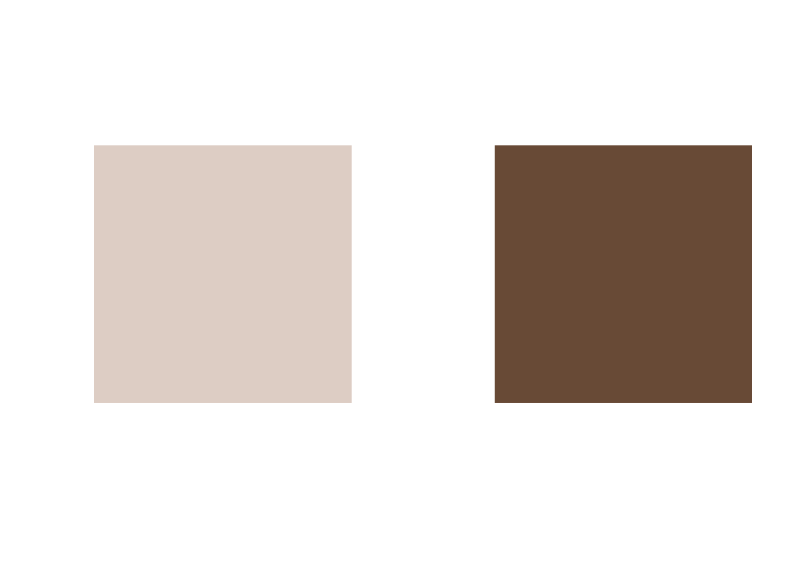
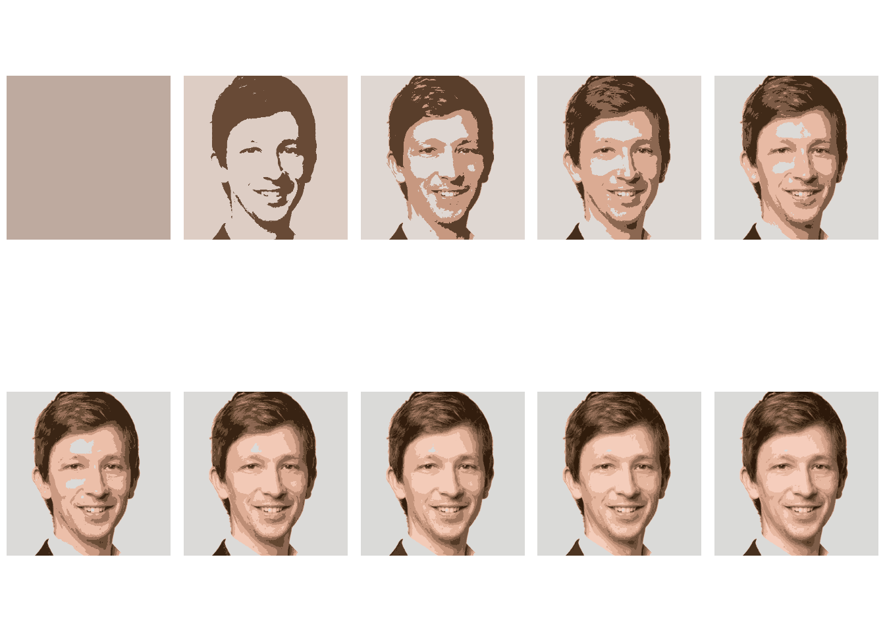

library(jpeg)
# Load image
X <- readJPEG("Martin-Sterchi.jpg", native = FALSE)
# Dimensions of X
dim(X)[1] 512 512 3The other day, I had a great session with my Master’s students exploring Clustering. We focused primarily on the k-Means algorithm, and I was reminded of just how cool that algorithm is.
One of the reasons k-Means is so interesting is that it’s easy to understand and visualize (well, at least in 2D and with numeric-only features). But beyond that, its versatility is what truly makes it stand out. k-Means isn’t just for clustering observations into similar groups, it has a wide range of applications.
For instance, we can use k-Means for dimensionality reduction, feature engineering, selecting which observations to label in a semi-supervised setting, and even image segmentation. If you’re interested in exploring more, I highly recommend Hands-On Machine Learning with Scikit-Learn, Keras, and TensorFlow by Aurélien Géron—an excellent resource showcasing the many ways k-Means can be applied.
Here, I’d like to quickly demonstrate how to use k-Means for image segmentation on your own portrait picture using R. This is just fun, nothing too terribly useful.
We start by loading my FHNW portrait picture (FHNW is my current employer). For this we use the handy jpeg package.
library(jpeg)
# Load image
X <- readJPEG("Martin-Sterchi.jpg", native = FALSE)
# Dimensions of X
dim(X)[1] 512 512 3As you can see, X is a three-dimensional array. You can imagine it as three stacked \(512\times 512\) matrices, one per Red-Green-Blue (RGB) color channel.
Next, we store the original dimensions of X and then transform the array into a large matrix, in which every row represents a pixel.
# Store dimensions of original image
dim_original <- dim(X)
# Transform 3D array to matrix
dim(X) <- c(dim_original[1] * dim_original[2], 3)
# New dimensions of X
dim(X)[1] 262144 3The picture is now basically represented as a dataset of \(n=512\cdot 512=262'144\) observations (every observation is a pixel) and \(p=3\) columns (the three color channels).
The idea of this type of image segmentation is simple: we let k-Means cluster the observations (pixels) into \(k\) groups of similarly colored pixels. Or in other words, pixels with similar RGB color values will be grouped into the same color cluster.
For now, we let k-Means create \(k=2\) clusters.
# Set k (number of clusters)
k <- 2
# Run k-means
km.out <- kmeans(X, k, nstart = 20)
# Output k-means
print(km.out$centers) [,1] [,2] [,3]
1 0.8660900 0.8047682 0.7698332
2 0.4066233 0.2899175 0.2120528The output above are the two cluster centers (or centroids). These two centroids are obviously also colors. Let’s visualize the colors:
# Two square plots next to each other
par(mfrow = c(1, 2), pty = "s")
# Plot the two centroid colors using rgb()
plot(1, 1, col = rgb(0.8660900, 0.8047682, 0.7698332), pch = 15, cex = 30, ann = FALSE, axes = FALSE)
plot(1, 1, col = rgb(0.4066233, 0.2899175, 0.2120528), pch = 15, cex = 30, ann = FALSE, axes = FALSE)
The trick is now to replace the colors of all pixels belonging to a given cluster by the cluster’s centroid color. This will lead to a segmentation of the image into (in our case) two areas of different color.
In R, we can create the segmented image array as follows:
km.out$cluster is a vector of length 262’144 defining which pixel belongs to which cluster.
Finally, let’s transform the segmented image back to its orignal dimensions.
We can now plot the resulting image:
# Plot should be square
par(pty = "s")
# Empty plot
plot(0:1, 0:1, type = "n", ann = FALSE, axes = FALSE)
# Add image
rasterImage(X_segmented, 0, 0, 1, 1)If you want to export the segmented portrait picture to your working directory, you can run the following command:
Finally, let’s plot the segmented images for values of \(k=1,\dots,10\), using a for loop:
# Some plot options
par(mfrow = c(2, 5), oma = c(0, 0, 0, 0), mar = c(0, 0, 0, 0), pty = "s")
# Loop over k = 1, ..., 10
for (k in 1:10) {
# EMpty plot
plot(0:1, 0:1, type = "n", ann = FALSE, axes = FALSE)
# k-Means
km.out <- kmeans(X, k, nstart = 3)
# Segmented image
X_segmented <- km.out$centers[km.out$cluster, ]
# Reshape segmented image
dim(X_segmented) <- dim_original
# Plot the image
rasterImage(X_segmented, 0, 0, 1, 1)
}
For \(k=1\), only one cluster is built and its centroid color is the average color in the image. In that case, the image obviously contains no contours.
I hope you enjoyed that brief post and maybe you can use it to create your own stylized portrait picture.